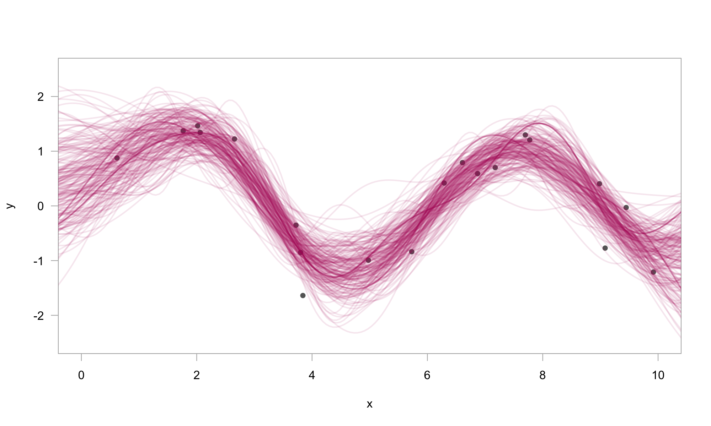

greta.gp extends greta to let you define Gaussian processes as part of your model. It provides a syntax to create and combine GP kernels, and use them to define either full rank or sparse Gaussian processes.
Installation
You can install the current release version of greta.gp from CRAN:
install.packages("greta.gp")Or install the development version of greta.dynamics from r-universe:
install.packages("greta.gp", repos = "https://greta-dev.r-universe.dev")You can also install the development version of greta.gp via GitHub:
remotes::install_github("greta-dev/greta.gp")Example usage
# simulate data
x <- runif(20, 0, 10)
y <- sin(x) + rnorm(20, 0, 0.5)
x_plot <- seq(-1, 11, length.out = 200)
library(greta)
library(greta.gp)
# hyperparameters
rbf_var <- lognormal(0, 1)
rbf_len <- lognormal(0, 1)
obs_sd <- lognormal(0, 1)
# kernel & GP
kernel <- rbf(rbf_len, rbf_var) + bias(1)
f <- gp(x, kernel)
# likelihood
distribution(y) <- normal(f, obs_sd)
# prediction
f_plot <- project(f, x_plot)
# fit the model by Hamiltonian Monte Carlo
m <- model(f_plot)
draws <- mcmc(m, n_samples = 250)
# plot 200 posterior samples
# plot 200 posterior samples
plot(
y ~ x,
pch = 16,
col = grey(0.4),
xlim = c(0, 10),
ylim = c(-2.5, 2.5),
las = 1,
fg = grey(0.7),
)
for (i in 1:200) {
lines(draws[[1]][i, ] ~ x_plot,
lwd = 2,
col = rgb(0.7, 0.1, 0.4, 0.1))
}
Code of Conduct
Please note that the greta.gp project is released with a Contributor Code of Conduct. By contributing to this project, you agree to abide by its terms.